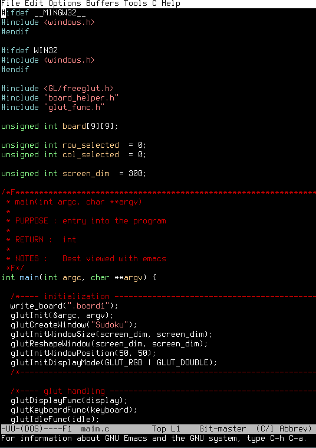

I am a Software Developer in Junction City, Kansas. I have many interests such as geometry, philosophy, and many others. I tend to be very wordy in my communications with people, I am also a huge advocate of Free Software, and am an avid emacs user. You can email me and I will try to get back to you within 24 hours.

What do I do?
As the title of the website suggests, I am a Software Developer. I have technical knowledge in many areas, I can create web pages, desktop applications, and mobile apps! If you wish to know about my qualifications more specifically my resume is available here: